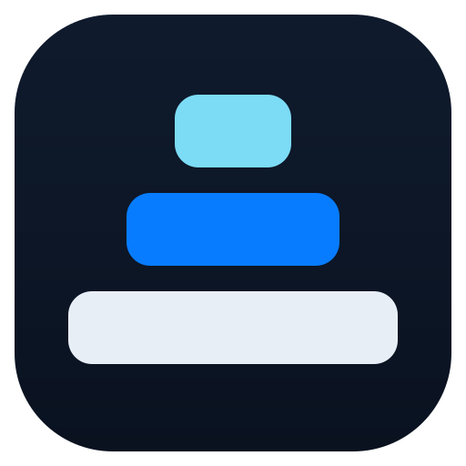

Starting Cairn…
Getting your projects ready.
If this keeps happening, restart your computer or reinstall Cairn. Your files are safe either way.

Getting your projects ready.
If this keeps happening, restart your computer or reinstall Cairn. Your files are safe either way.